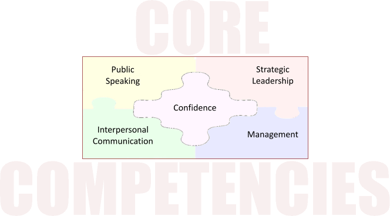

|
|
||
| CORE COMPETENCIES: It is important to note that each member using Base Camp will have the opportunity to select from many electives to extend their learning. With the addition of electives, members have the flexibility to cover all core competencies within each path. The five core competencies are: Public Speaking, Interpersonal Communication, Strategic Leadership, Management and Confidence. Confidence is unique because it cannot be taught, but is gained in every path. | ||
| Public Speaking: builds members’ confidence in delivering both prepared and impromptu speeches in the Toastmasters club environment as well as their personal and professional lives. Through practice and peer evaluation, members learn how to present their messages effectively, concisely and professionally. This competency provides tools that members can use to learn prepared and impromptu speaking skills. | ||
| Interpersonal Communication: builds members’ confidence in communicating with others, whether verbally, non-verbally, in writing or via electronic methods. Members learn how to build relationships, resolve conflict and communicate well with others. This Toastmasters competency teaches members to effectively interact with others at any level, from guests to members and leaders at the club, area, division, district levels and beyond. | ||
| Management: While a person may be both a leader and a manager, there is a difference in the skill sets needed for these roles. Within the Toastmasters organization of clubs, areas, divisions and districts, managing deals mostly with planning, organizing and facilitating specific tasks (such as the club treasurer managing the club’s budget). Managing also deals with people, whether they are individuals or groups. Managers build camaraderie and teamwork and empower members to learn and grow through the Toastmasters education program. | ||
| Strategic Leadership: Every club, area, division and district needs a strategic leader—someone who sees the big picture and has the ideas and vision to do things better, whether it’s build a more supportive club environment, lead a team, or attract and retain more members. | ||
| The Toastmasters strategic leader has a vision that is both attainable and inspiring. He or she is able to bring about positive changes by inspiring others to get involved and help in the effort to reach common goals. | ||
| Building Confidence: In Toastmasters, one of the many ways that members develop confidence is through self-reflection. Through self-reflection and evaluation, members learn to acknowledge their flaws and embrace their capacity for self-improvement. By learning how to set goals and meet them, they gain confidence in their own knowledge, skills and abilities. | ||
|  | ||
| View Core Competencies by Level | ||
|
|